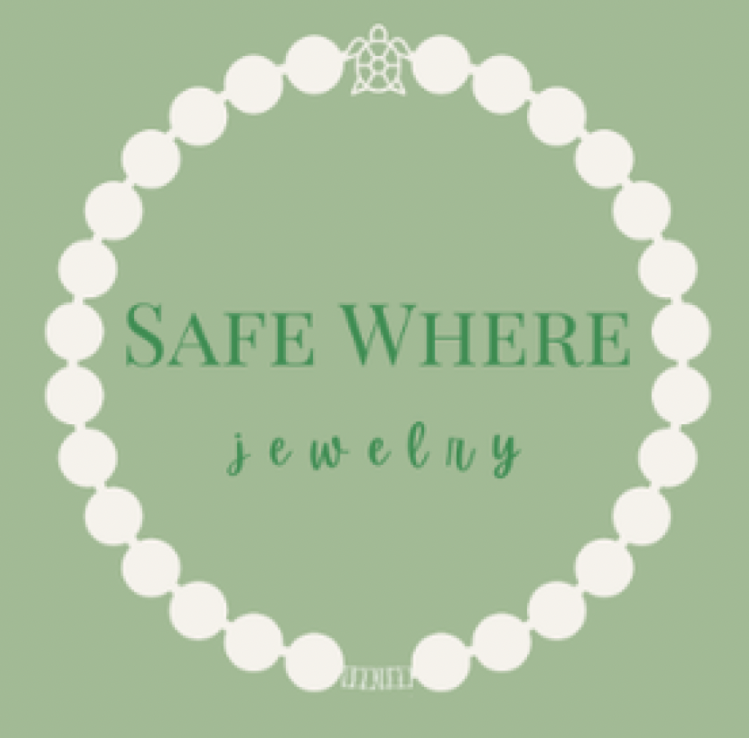
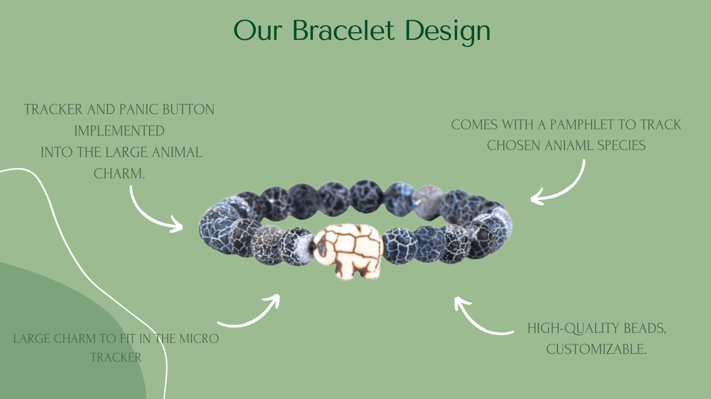
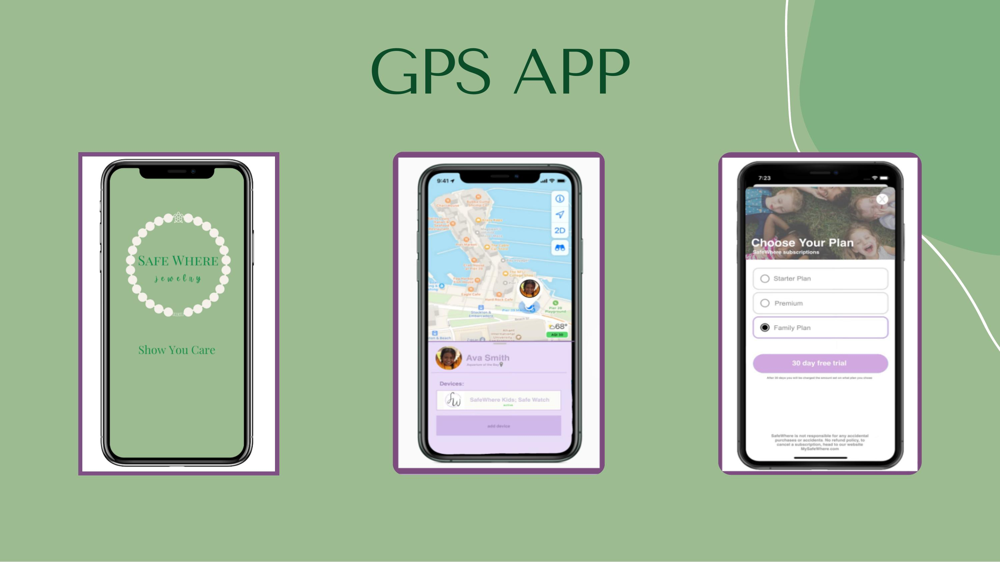
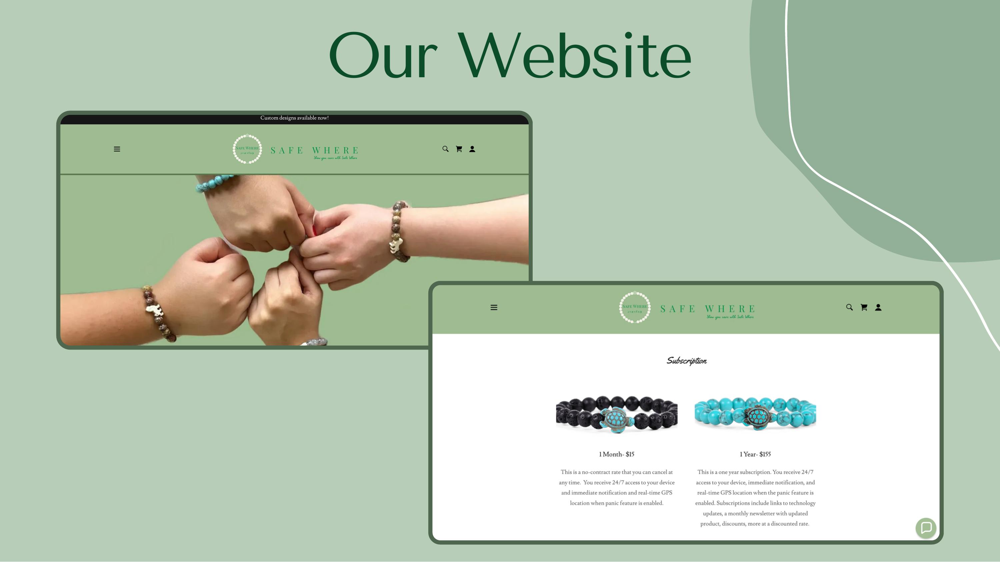

Too visible
Bulky trackers were easy to notice, remove, lose, or avoid wearing.

SafeWhere Original siteProduct case study · CEO & Co-Founder · 2024–present
SafeWhere is a concept-stage wearable that pairs discreet location tracking and an emergency alert with something meaningful to a child: following an endangered animal.
Selected work
Open the folder to explore the strategy, product, research, and venture work behind SafeWhere.
01 · The problem
Our early research surfaced a gap between what parents needed from a safety device and what younger children would realistically use.
Bulky trackers were easy to notice, remove, lose, or avoid wearing.
App-first options assumed a child already carried a smartphone.
Most products solved for the purchaser—the parent—but not the wearer.
Children lacked a discreet way to actively signal that something was wrong.
02 · Target user
Primary buyer
“Help me know where my child is and give us a fast path to action—without requiring them to own a phone.”
Primary wearer
“Give me something comfortable and personal that feels like mine—not a device monitoring me.”
03 · Competitive landscape
| Alternative | What it did well | Gap we saw |
|---|---|---|
| AirTag + third-party band | Accessible ecosystem and familiar tracking | Bulky on small wrists; removable; no reason for a child to keep it on |
| Invisawear | Discreet, jewelry-like emergency accessory | Designed and priced for adults; phone and connectivity dependent |
| Life360 | Strong family location-sharing experience | App-first model assumes the child carries a phone |
| Manual workarounds | Phone calls, family plans, ID cards, meeting points | Helpful for prevention, but limited during a fast-moving emergency |
The product insight
Our first framing focused on the parent: make tracking smaller, safer, and more discreet. Mentor conversations and competitor research exposed a missing question: why would a child keep wearing it?
The idea clicked when we stopped treating the child as the object being tracked and started treating them as a user.
A hidden GPS tracker in a smaller bracelet.
AfterA child-safety experience with a reason to participate.
05 · The solution
A miniature GPS concept embedded inside an animal charm rather than exposed on the wrist.
A double-press panic action notifies selected emergency contacts; press-and-hold cancels an accidental alert.
The child chooses an animal friend to follow, turning the bracelet into something personally meaningful.
Parents pair the bracelet, view location, manage contacts, and save frequently visited places.

06 · Product decisions
Prioritized
Deferred
Key tradeoff
Embedding tracking and battery components inside a small charm strengthened the value proposition, but increased hardware, durability, and unit-cost risk. We used supplier conversations and cost modeling to expose that risk early.
Prototype ecosystem
The prototype connected the physical bracelet to a parent-facing mobile experience and a direct-purchase website. This helped judges and potential partners understand the full service—not just the hardware.


07 · Feedback loops
Added a miniature panic-button concept and a cancellation flow for accidental presses.
Added animal tracking and customizable styling to address ongoing wear.
Built a pricing model, supplier plan, subscription options, partnerships, and go-to-market channels.
08 · Outcomes
At this stage, the most meaningful impact has been evidence of momentum: external recognition, early capital, repeated feedback, and a clearer path to validation.
A note on stage: SafeWhere is an ongoing, pre-market venture. Market size, sales, and financial figures in the original business plan are projections—not realized usage or revenue.
09 · What I learned
A parent buys the bracelet, but a child determines whether it stays on. Product-market fit depended on both.
Each “no” revealed an assumption to investigate—cost, safety, adoption, connectivity, or manufacturability.
Monthly sprints, clear owners, pitch rehearsals, mentor meetings, and progress reviews kept a five-person team moving.